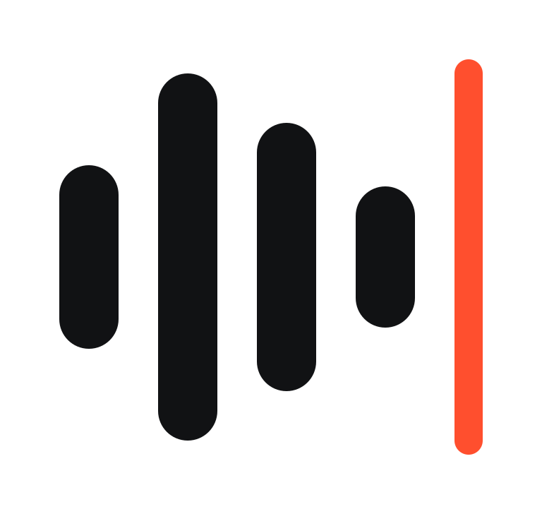

mouthpieceAntes de falar, o texto da esquerda vira o da direita. Para nomes que saem errados, como Alien: Isolation → Alien Isolation.
Leia o texto abaixo inteiro (1 a 2 minutos), num lugar silencioso, a um palmo do microfone. Siga o tom indicado em cada trecho: quanto mais variada a leitura, mais dados da sua voz o clone tem. Errou? Continue lendo, sem parar. O clone copia o timbre e o jeito de falar.